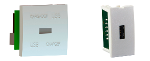

Caja de Datos
Contenedor utilizado para organizar y almacenar datos o equipos relacionados con la infraestructura de red. Puede referirse tanto a una agrupación lógica de datos en sistemas informáticos como a un dispositivo físico donde se guardan equipos y componentes de red, como cables, conectores y otros accesorios necesarios para la gestión y mantenimiento de una red.
